×

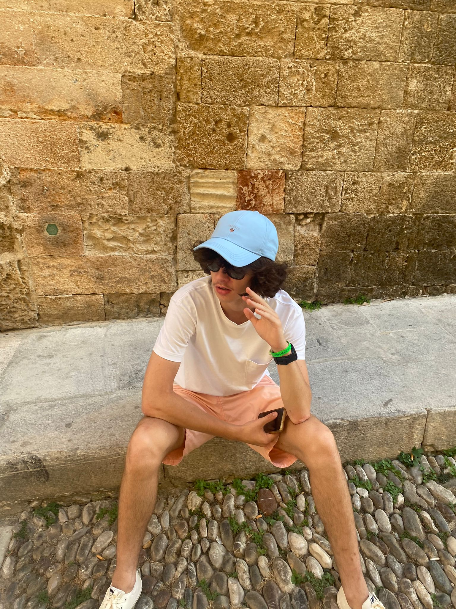
Cześć! Jestem Mikołaj, artystą z pasją do farb akrylowych. Znajdziesz tu kolekcję moich najnowszych prac, zgłębiających tematykę abstrakcji i natury. Zapraszam do oglądania!
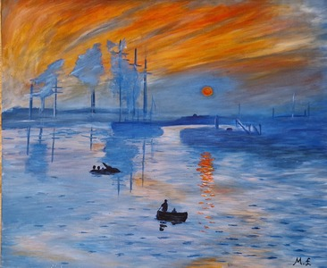
Technika: Akryl na Płótnie | Rok: 2024
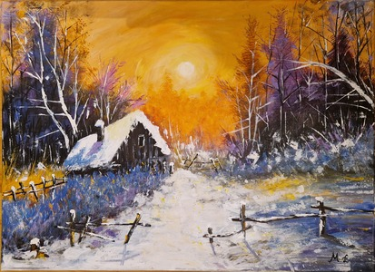
Technika: Akryl na Płótnie | Rok: 2023
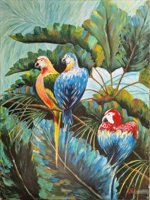
Technika: Akryl na Płótnie | Rok: 2025
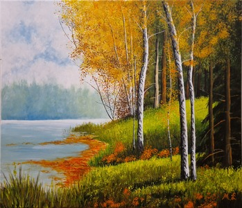
Technika: Akryl na Płótnie | Rok: 2025
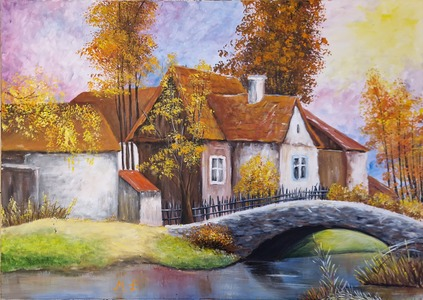
Technika: Akryl na Płótnie | Rok: 2023
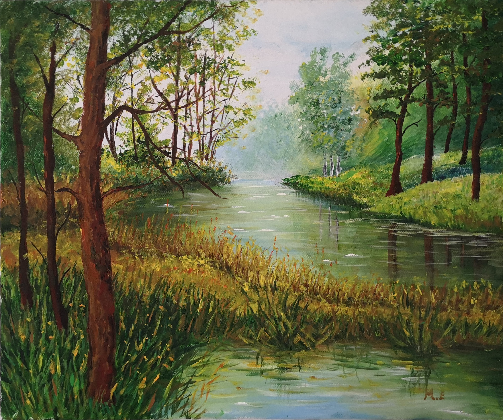
Technika: Akryl na Płótnie| Rok: 2022
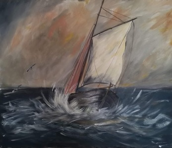
Technika: Akryle na Płótnie | Rok: 2021
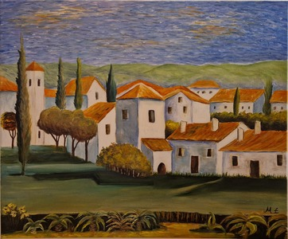
Technika: Akryl | Rok: 2022
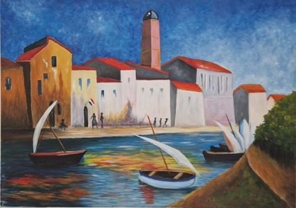
Technika: Akryl na Płótnie | Rok: 2023
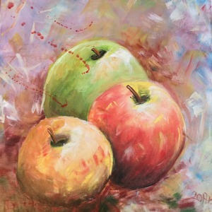
Technika: Akryle na Płótnie | Rok: 2017
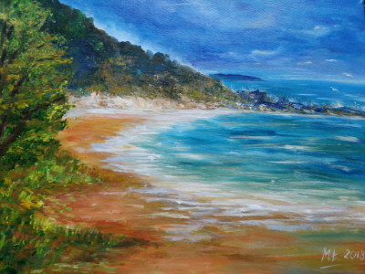
Technika: Akryle | Rok: 2021
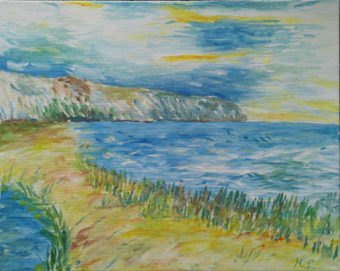
Technika: Akryle w wodzie | Rok: 2020
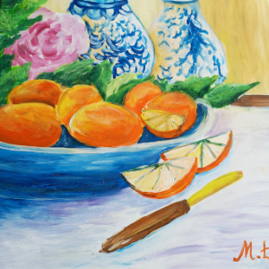
Technika: Akryl na płótnie | Rok: 2021
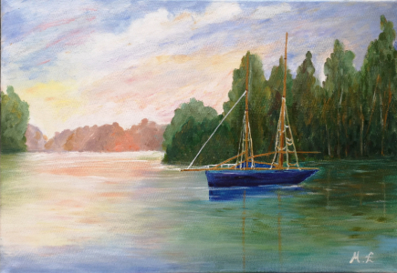
Technika: Akryle na Płótnie | Rok: 2020
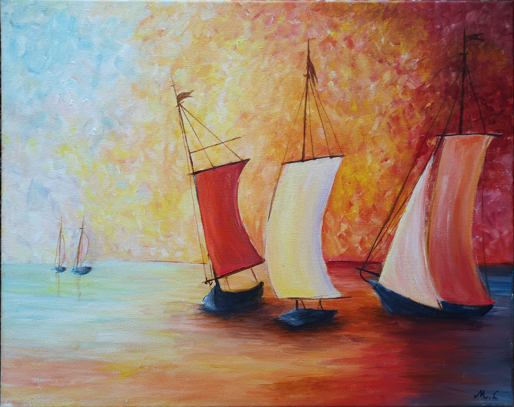
Technika: Akryle na Płótnie | Rok: 2019
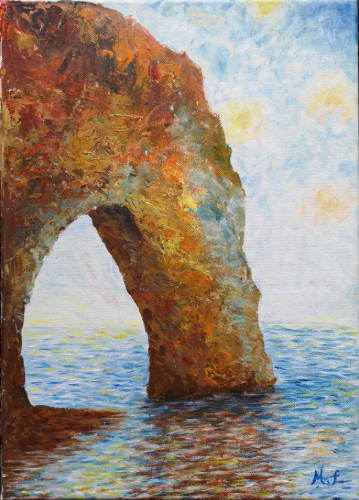
Technika: Akryle | Rok: 2019
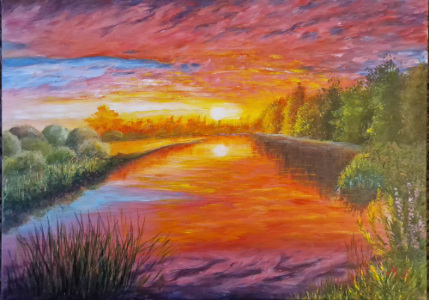
Technika: Akryle | Rok: 2025
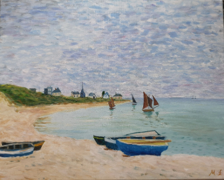
Technika: Akryle na płótnie | Rok: 2018
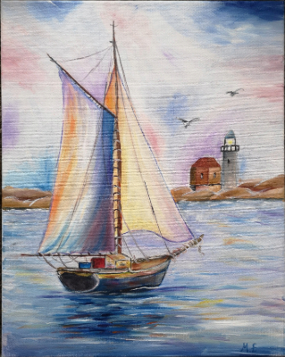
Technika: Tusz | Rok: 2018
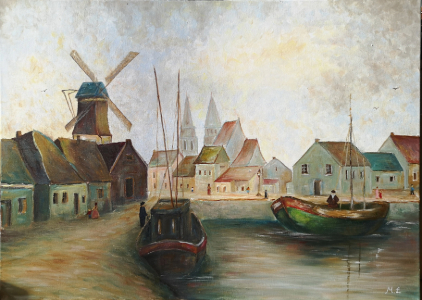
Technika: Akryl | Rok: 2024
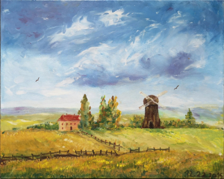
Technika: Akryl | Rok: 2017
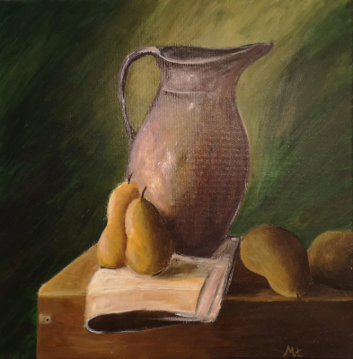
Technika: Akryle | Rok: 2018
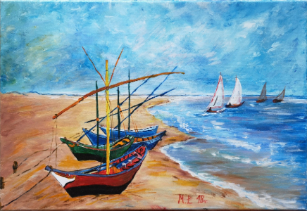
Technika: Alryle | Rok: 2018
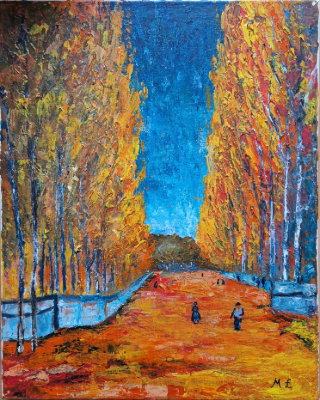
Technika: Akryle | Rok: 2020
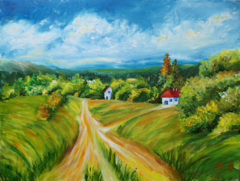
Technika: Akryle | Rok: 2023
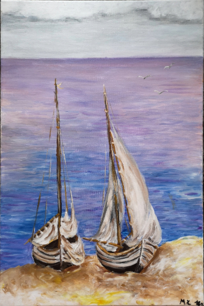
Technika: Akryle | Rok: 2019
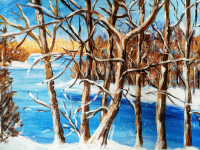
Technika: Ołówek | Rok: 2015
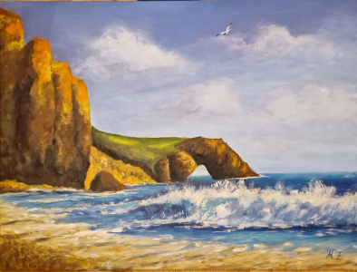
Technika: Akryl | Rok: 2025
Masz pytanie dotyczące moich prac lub interesuje Cię zlecenie? Śmiało pisz!
E-mail: lokiecmikolaj@gmail.com